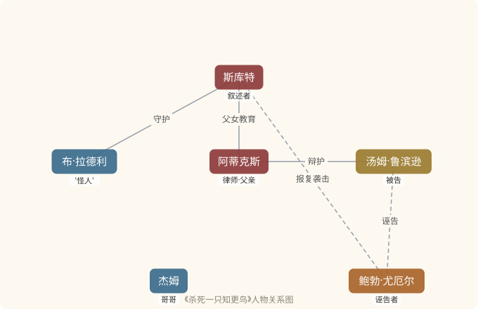

杀死一只知更鸟
一、基本信息
| 作者 | 哈珀·李 |
|---|---|
| 成书/出版 | 1960年出版（Britannica） Harper Lee — Encyclopaedia Britannica（百科全书） |
| 国别/地区 | 美国 |
| 时代 | 现当代 · 20世纪 |
| 体裁 | 长篇小说 |
| 语言 | 英语 |

《杀死一只知更鸟》人物关系图（人物关系图）
二、创作背景
设定：大萧条时期阿拉巴马州梅岗镇——白人律师阿蒂克斯·芬奇为黑人汤姆·鲁滨逊辩护强奸案——以Scout（斯库特）儿童视角叙述（通说）。
书名（通说待核）：'杀死知更鸟是一种罪'——知更鸟只唱歌不害人——无辜者的毁灭。
人物原型：阿蒂克斯以作者父亲为原型（通说待核）；迪尔=卡波特（Britannica：childhood friends with Truman Capote (the model for Dill in the novel)）。
三、内容脉络
斯库特、杰姆与迪尔：夏日小镇、'怪人'拉德利之谜（通说）。
审判：汤姆·鲁滨逊被诬强奸白女——阿蒂克斯辩护、法庭 segregated、判决有罪（通说）——汤姆试图越狱被枪杀。
结局：鲍勃·尤厄尔（败诉者）报复儿童——'怪人'拉德利出手相救—— Scout终于'看见'了怪人（通说）。
四、主要人物表
| 人物 | 身份 | 说明 |
|---|---|---|
| 斯库特 | 女孩叙述者 | 天真的儿童视角 |
| 阿蒂克斯·芬奇 | 律师·父亲 | '道德的律师'——'在你真正了解一个人之前，不要评判他'（原文意，待核） |
| 汤姆·鲁滨逊 | 黑人被告 | '知更鸟'——无辜者 |
| 布·拉德利 | '怪人'邻居 | 另一个'知更鸟' |
| 杰姆 | 哥哥 | '从天真到觉醒'的成长 |
五、主题与艺术特点
- 种族不公正：1930s南方Jim Crow（通说）。
- '站在他人鞋里'：同理心（阿蒂克斯教育——原文意，待核）。
- 成长与'纯真的丧失'（通说）。
- 艺术特点：儿童视角+双线（拉德利/审判）结构（通说）。
六、影响与评论
- Britannica（Lee 条）：1961普利策奖；'sold over 40 million copies'；1962年电影（Gregory Peck）与2018年百老汇剧（Aaron Sorkin 改编）。
Harper Lee — Encyclopaedia Britannica（百科全书） - Britannica：2007总统自由勋章。
Harper Lee — Encyclopaedia Britannica（百科全书） - 阿蒂克斯成为美国'良知'符号（ABA 律师榜——通说待核）。
Harper Lee — Encyclopaedia Britannica（百科全书）
七、阅读建议
难点
- 儿童语言与南方方言——译本需捕捉。
- Jim Crow 法与1930s大萧条背景——注释。
- 李育超译《杀死一只知更鸟》（译林出版社，通说待核）。
- 英文本：Harper Perennial（通说待核）。
通读 → 精读法庭辩护段与结尾 → 对照1962电影与《设立守望者》争议。
八、待核实
- 1960年7月11日 J.B. Lippincott 出版（通说）细节待核。
- 李育超译本信息待核。
- 2018年百老汇剧（Sorkin 改编）细节待核。
- 2015《设立守望者》争议各方说法待核。